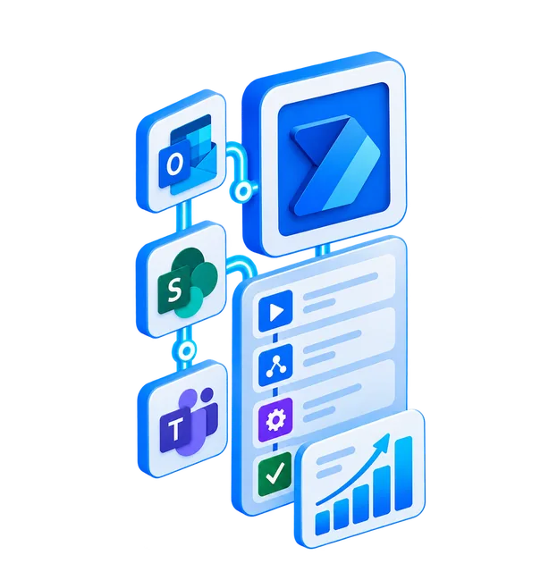

Flujos de aprobación
Solicitudes, gastos y documentos que avanzan sin perseguir a nadie por correo.

¿Otra mañana copiando datos de un correo a Excel? Conectamos tus herramientas con Microsoft Power Automate para que el trabajo repetitivo se haga solo.
Automatización pensada para que tus herramientas trabajen juntas, no para añadir otra tarea a tu lista.
Consulta nuestra ubicación y la información pública de nuestro servicio de automatización.
No se trata de automatizarlo todo. Se trata de empezar por lo que más tiempo te roba.
Solicitudes, gastos y documentos que avanzan sin perseguir a nadie por correo.
Haz que Outlook, Teams, SharePoint y otras herramientas compartan información.
Organiza avisos, registros y documentos con reglas claras en lugar de pasos manuales.
Recibe la información cuando toca, sin tener que acordarte de comprobarla.
Diseñamos flujos adaptados a cómo trabaja tu empresa, no al revés.
Menos tareas.
Más ideas.
Mejor flujo.
Reduce los pasos repetitivos que frenan a tu equipo.
Unimos sistemas y avisos en un flujo comprensible.
Define reglas para que cada tarea siga el mismo proceso.
Adapta las automatizaciones a medida que cambian tus necesidades.
Vemos qué tarea te quita tiempo y qué aplicaciones utilizas.
Definimos el disparador, las acciones y las excepciones.
Configuramos y probamos la automatización contigo.
Te explicamos cómo funciona y qué revisar si algo cambia.
Cuéntanos qué haces cada día a mano. Buscaremos contigo por dónde empezar.
¿No ves el calendario? Abre la agenda aquí ↗Dinos qué proceso quieres automatizar, qué herramientas utilizas y en qué momento se atasca. Sin discursos: queremos entender el problema.
Atención telefónica: +34 910 05 40 12
Hay tareas que parecen pequeñas hasta que las sumas: copiar un adjunto, avisar de una aprobación, pasar un dato de una herramienta a otra. Si tu equipo hace lo mismo cada mañana, ese tiempo no vuelve. En PowerFlow diseñamos automatizaciones con Microsoft Power Automate para que los procesos rutinarios se ejecuten siguiendo reglas claras.
Trabajamos con flujos entre herramientas de Microsoft 365, como Outlook, Teams y SharePoint, y con otros sistemas cuando existe una integración compatible. Podemos ayudarte a automatizar avisos, aprobaciones, movimientos de información y tareas administrativas. Primero entendemos tu proceso; después vemos qué puede automatizarse, qué permisos hacen falta y qué debe seguir supervisando una persona.
¿Buscas un desarrollador de Power Automate o necesitas mejorar un flujo que ya utilizas? Cuéntanos qué ocurre y qué resultado necesitas. Te explicaremos las opciones antes de plantear una implementación.